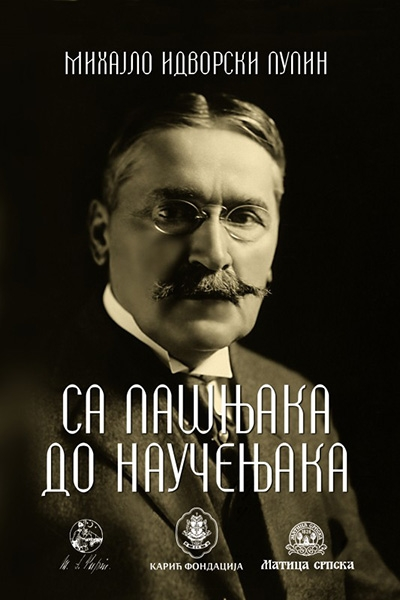

Literary work
Besides his patents he published several dozen scientific disputes, articles, reviews and a 396-page autobiography under the name Michael Pupin, From Immigrant to Inventor (Scribner's, 1923). He won the annual Pulitzer Prize for Biography or Autobiography. It was published in Serbian in 1929 under the title From pastures to scientist (Od pašnjaka do naučenjaka).

Beside this he also published:
- Pupin Michael: Der Osmotische Druch und seine Beziehung zur Freien Energie, Inaugural Dissertation zur Erlangung der Doctorwurde, Buchdruckerei von Gustav Shade, Berlin, June, 1889.
- Pupin Michael: Thermodynamics of Reversible Cycles in Gases and Saturated Vapors, John Wiley & Sons. 1894.
- Pupin Michael: Serbian Orthodox Church, J. Murray. London, 1918.
- Pupin Michael: Yugoslavia. (In Association for International Conciliation Amer. Branch —Yugoslavia). American Association for International Conciliation. 1919.
- Pupin Michael: The New Reformation; from Physical to Spiritual Realities, Scribner, New York, 1927.
- Pupin Michael: Romance of the Machine, Scribner, New York, 1930.
- Pupin Michael: Discussion by M. Pupin and other prominent engineers in “Toward Civilization, edited by C. A. Beard. Longmans, Green& Co. New York, 1930.